A continuous surjection
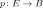
is a covering map if every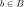
has an open neighbourhood such that
such that
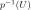
is a disjoint union of open sets, each mapped homeomorphically onto by  . Such a is evenly covered,
and the pieces are its sheets.
. Such a is evenly covered,
and the pieces are its sheets.
Let be a covering map,
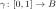
a path and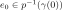
. Then there is exactly one path with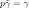
and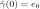
.
Cover  by evenly covered open sets; their preimages under
by evenly covered open sets; their preimages under
 form an open cover of the compact metric space
form an open cover of the compact metric space ![\([0,1]\)](m/b40f419d16d54b95652910807100bb67f190c2b6.svg) , so
it has a Lebesgue number, and there is a partition
, so
it has a Lebesgue number, and there is a partition
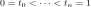
with each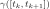
inside an evenly covered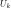
.Construct
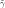
on by induction. Given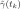
, let be the unique sheet over
containing it; define on
be the unique sheet over
containing it; define on
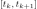
as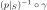
, which is continuous and agrees with the previous piece at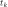
. The pasting lemma over the closed intervals makes the result continuous.Uniqueness: let and
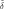
be two lifts agreeing at , and let
, and let  be the set where they agree. is
non-empty. It is open and closed: near any
be the set where they agree. is
non-empty. It is open and closed: near any  , both lifts stay in
sheets over an evenly covered neighbourhood of
, both lifts stay in
sheets over an evenly covered neighbourhood of 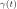
; if they agree at they are in the same sheet and hence equal near
since is injective there, and if they differ at they are in
different, disjoint sheets and hence differ near . As is
connected, 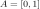
.
With as above, let
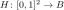
be continuous and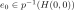
. Then there is exactly one continuous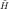
with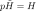
and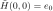
. In particular, path-homotopic paths lift to path-homotopic paths with the same endpoints.As before, a Lebesgue number for the cover of
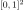
by the preimages of evenly covered sets gives a grid of closed squares each mapped by into an evenly covered set. Lift the squares one at a
time, in the order of a path through the grid that always meets the
already-lifted region in a connected set: on each square, choose the
sheet containing the already-defined values, which is forced because
that region is connected and its image is in one sheet. Continuity
follows from the pasting lemma, and uniqueness by the connectedness
argument of the previous theorem applied to .
into an evenly covered set. Lift the squares one at a
time, in the order of a path through the grid that always meets the
already-lifted region in a connected set: on each square, choose the
sheet containing the already-defined values, which is forced because
that region is connected and its image is in one sheet. Continuity
follows from the pasting lemma, and uniqueness by the connectedness
argument of the previous theorem applied to .
If is a path homotopy,
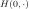
and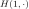
are constant, so their lifts are paths lying in the discrete fibres over those points, hence constant; therefore is a path homotopy between the lifts of the two paths, which in particular have common endpoints.
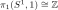
, the isomorphism sending the class of a loop to the endpoint of its lift starting at under
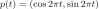
.The map
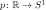
is a covering: each of the four open half-circles is evenly covered, its preimage being a disjoint union of open intervals each mapped homeomorphically.Define
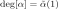
, where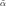
is the lift of starting at . It lands in
starting at . It lands in
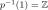
, it is well defined by the homotopy lifting theorem, and it is a homomorphism: the lift of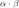
starting at is followed by 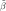
translated by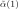
, which is a lift of starting there, so
the endpoint is
starting there, so
the endpoint is 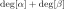
.Surjective: the path
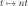
in projects to a loop of
degree
projects to a loop of
degree  . Injective: if
. Injective: if 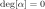
then is a loop in, which is convex, so
is path-homotopic to the constant by the
straight-line homotopy; composing that homotopy with shows
is null-homotopic.
There is no retraction of the closed disc
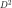
onto its boundary circle; consequently every continuous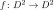
has a fixed point.Suppose
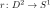
were a retraction and let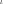
be the inclusion. Then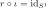
, so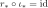
on ; but
; but
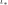
factors through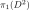
, which is trivial since is convex and hence contractible. So the identity of factors through the trivial group – impossible.
factors through the trivial group – impossible.
If  had no fixed point, the map sending
had no fixed point, the map sending  to the point where
the ray from
to the point where
the ray from
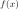
through meets 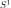
would be continuous – the intersection point depends continuously on the two distinct points – and would fix pointwise, giving a retraction.
Brouwer's theorem in dimension two costs exactly one computation of a
fundamental group, and the pattern is the whole method of algebraic
topology: a geometric impossibility becomes an algebraic one under a
functor. In higher dimensions  is useless – spheres of
dimension at least two are simply connected – and homology is what
replaces it.
is useless – spheres of
dimension at least two are simply connected – and homology is what
replaces it.